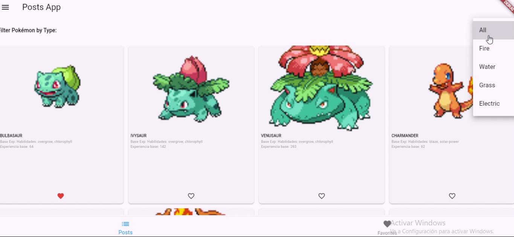

Pokémon API Flutter App

Este aplicativo consome dados da PokéAPI e oferece uma experiência interativa e intuitiva para fãs de Pokémon.
Entre as principais funcionalidades, estão:
🔍 Explorar Pokémon: Visualizar vários Pokémon organizados por categorias.
⭐ Favoritos: Selecionar e gerenciar seus Pokémon favoritos.
📜 Detalhes: Consultar informações detalhadas, como estatísticas, tipos e habilidades.
- 🛠️ Tecnologias utilizadas: Flutter, Dart, PokéAPI, Provider, HTTP, SharedPreferences, SQLite
- Data de criação: Setembro de 2024
- Status: Concluído